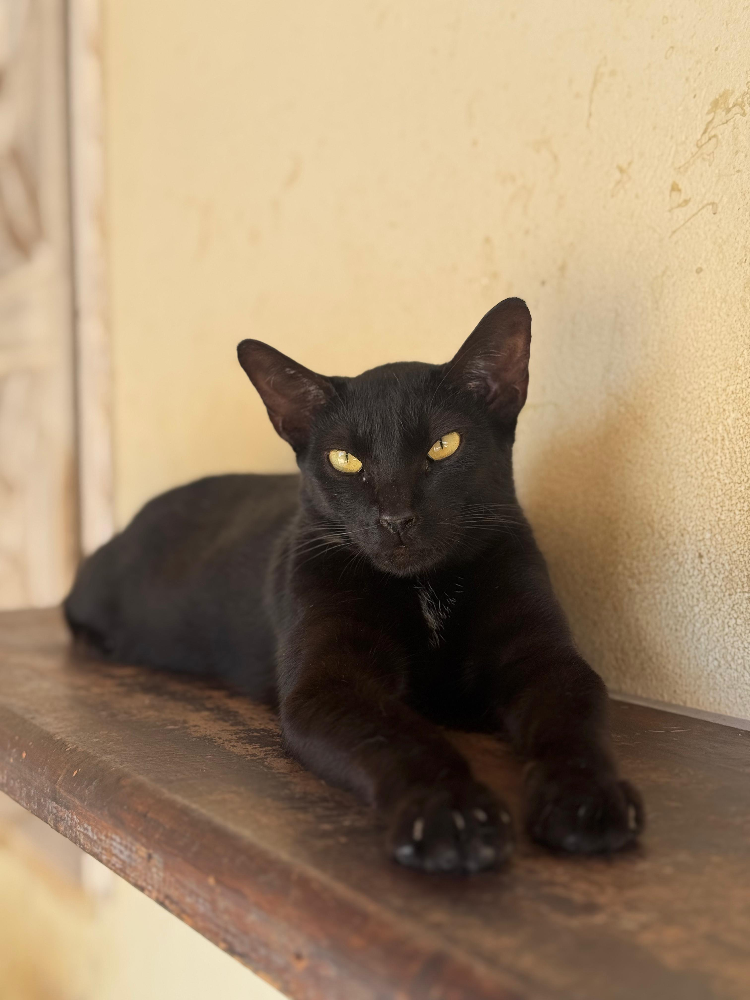
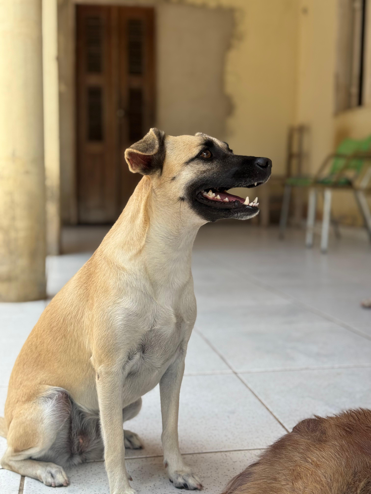
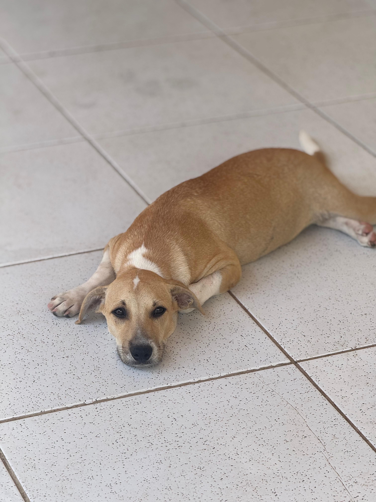

Encontre o companheiro perfeito
Milhares de animais esperam por uma segunda chance. Explore as opções e adote com responsabilidade.
Ver Animais para Adoção
O que é o Makita Conecta?
O Makita Conecta é uma plataforma web inovadora que visa facilitar o processo de adoção de animais. Reunimos em um só lugar protetores, ONGs e pessoas interessadas em adotar, tornando a busca e o cadastro de pets mais eficientes.
Nosso objetivo é dar visibilidade aos animais abandonados e promover a adoção responsável.
Como Funciona
Busque
Utilize nossos filtros para encontrar o pet ideal por raça, idade, porte e localização.
Conecte-se
Entre em contato com protetores e ONGs para saber mais sobre o animal.
Adote
Complete o processo de adoção responsável e dê um lar a um animal necessitado.
Animais Disponíveis para Adoção



Histórias de Sucesso
Pronto para fazer a diferença?
Ajude um animal a encontrar um lar. Seja um adotante ou apoie uma ONG.
Quero Adotar Quero Apoiar